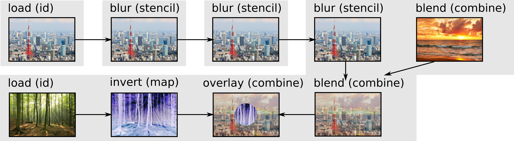
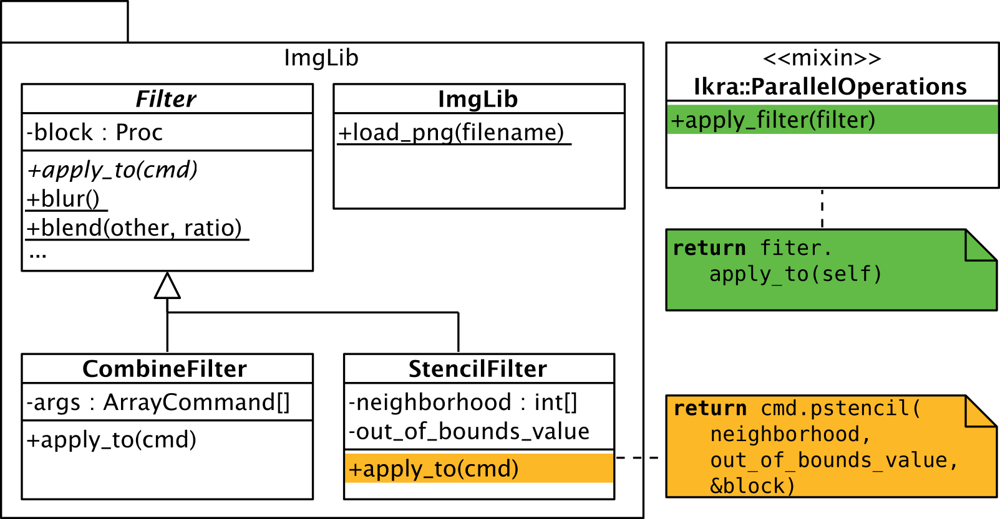

In this example, we design an image library with various simple effects and filters (e.g., blur filter). The library is built on top of Ikra and illustrates its basic usage. The entire source code is also available on GitHub. We first show how the library can be used.
require "image_library"
# Load Tokyo Tower image and blur it
tt = ImgLib.load_png("tokyo_tower.png")
for i in 0...3
tt = tt.apply_filter(ImgLib::Filters.blur)
end
# Blend with sunset
sun = ImgLib.load_png("sunset.png")
combined = tt.apply_filter(ImgLib::Filters.blend(sun, 0.3))
# Load + overlay forest
forest = ImgLib.load_png("forest.png")
forest = forest.apply_filter(ImgLib::Filters.invert)
combined = combined.apply_filter(
ImgLib::Filters.overlay(forest, ImgLib::Masks.circle(tt.height / 4)))
# Draw pixels on screen
ImgLib::Output.render(combined)
The above source code loads three images and mixes them together, after applying various filters. The result of the single steps and the final picture can be seen below.

We now describe how the library is implemented. The library defines two kinds of filters: Filters that are based on a combine (e.g., blending two images) or map (e.g., inverting an image) operation and filters that are based on a stencil (e.g., blurring an image) operation. They correspond to the classes CombineFilter and StencilFilter. Both hold a reference to a code block (Proc in Ruby) which defines the operation that should be performed. In addition, StencilFilter has fields that are specific to stencil operations such as an array containing the relative indices of the neighborhood. Filters are applied in a double-dispatch fashion, i.e., every Ruby array and Ikra array (array command) gets an extension method apply_filter which calls apply_to on the filter object. The filter object knows how to apply itself to the array.
module Ikra::ParallelOperations
def apply_filter(filter)
return filter.apply_to(self)
end
end
module ImgLib::Filters
class CombineFilter
def apply_to(cmd)
return cmd.pcombine(*args, &block)
end
end
class StencilFilter
def apply_to(cmd)
return cmd.pstencil(out_of_bounds_value, neighborhood, &block)
end
end
end

Our image library already comes with same filters. Some of them are stencil-based filters. Since every pixel is currently represented as a 32-bit integer, we need to use helper functions such as pixel_get_r etc. to shift and bit-and the pixel value to retrieve color values for R, G and B. We could also rewrite the code such that every pixel is an array of 3 integers (or an instance of a class Color with 3 instance variables). However, that would waste a bit of space because Ikra does not support 8-bit integers (only 32-bit integers) at the moment.
module ImgLib
module Filters
def self.blur
return StencilFilter.new(
neighborhood: STENCIL_2,
out_of_bounds_value: 0) do |values|
factor = 1.0/9.0
r = pixel_get_r(values[-1][-1]) + pixel_get_r(values[-1][0]) + pixel_get_r(values[-1][1]) + pixel_get_r(values[0][-1]) + pixel_get_r(values[0][0]) + pixel_get_r(values[0][1]) + pixel_get_r(values[1][-1]) + pixel_get_r(values[1][0]) + pixel_get_r(values[1][1])
g = pixel_get_g(values[-1][-1]) + pixel_get_g(values[-1][0]) + pixel_get_g(values[-1][1]) + pixel_get_g(values[0][-1]) + pixel_get_g(values[0][0]) + pixel_get_g(values[0][1]) + pixel_get_g(values[1][-1]) + pixel_get_g(values[1][0]) + pixel_get_g(values[1][1])
b = pixel_get_b(values[-1][-1]) + pixel_get_b(values[-1][0]) + pixel_get_b(values[-1][1]) + pixel_get_b(values[0][-1]) + pixel_get_b(values[0][0]) + pixel_get_b(values[0][1]) + pixel_get_b(values[1][-1]) + pixel_get_b(values[1][0]) + pixel_get_b(values[1][1])
build_pixel((factor * r).to_i, (factor * g).to_i, (factor * b).to_i)
end
end
def self.sharpen
return StencilFilter.new(
neighborhood: STENCIL_2,
out_of_bounds_value: 0) do |values|
factor = 1.0
r = 0 - pixel_get_r(values[-1][0]) - pixel_get_r(values[0][-1]) + 5 * pixel_get_r(values[0][0]) - pixel_get_r(values[0][1]) - pixel_get_r(values[1][0])
g = 0 - pixel_get_g(values[-1][0]) - pixel_get_g(values[0][-1]) + 5 * pixel_get_g(values[0][0]) - pixel_get_g(values[0][1]) - pixel_get_g(values[1][0])
b = 0 - pixel_get_b(values[-1][0]) - pixel_get_b(values[0][-1]) + 5 * pixel_get_b(values[0][0]) - pixel_get_b(values[0][1]) - pixel_get_b(values[1][0])
build_pixel((factor * r).to_i, (factor * g).to_i, (factor * b).to_i)
end
end
end
end
Some filters are combine-based filters. Again, we use helper functions either to retrieve color values or to make code more readable.
module ImgLib
module Filters
def self.blend(other, ratio)
return CombineFilter.new(other) do |p1, p2|
s1 = pixel_scale(p1, 1.0 - ratio)
s2 = pixel_scale(p2, ratio)
pixel_add(s1, s2)
end
end
def self.invert
return CombineFilter.new do |p|
r = pixel_get_r(p)
b = pixel_get_b(p)
g = pixel_get_g(p)
build_pixel(255 - r, 255 - g, 255 - b)
end
end
end
end
The method which are called inside of the parallel sections are mostly top-level function. Ikra also supports calling methods on objects (instance methods). These methods are also compiled to CUDA code if they are used inside of a parallel section.
# Helper functions
def pixel_get_r(value)
return (value & 0x00ff0000) >> 16
end
def pixel_get_g(value)
return (value & 0x0000ff00) >> 8
end
def pixel_get_b(value)
return value & 0x000000ff
end
def build_pixel(r, g, b)
rr = r
gg = g
bb = b
if rr < 0
rr = 0
end
if rr > 255
rr = 255
end
if gg < 0
gg = 0
end
if gg > 255
gg = 255
end
if bb < 0
bb = 0
end
if bb > 255
bb = 255
end
return (rr << 16) + (gg << 8) + bb
end
def pixel_scale(pixel, factor)
r = pixel_get_r(pixel)
g = pixel_get_g(pixel)
b = pixel_get_b(pixel)
return build_pixel((r * factor).to_i, (g * factor).to_i, (b * factor).to_i)
end
def pixel_add(p1, p2)
r1 = pixel_get_r(p1)
g1 = pixel_get_g(p1)
b1 = pixel_get_b(p1)
r2 = pixel_get_r(p2)
g2 = pixel_get_g(p2)
b2 = pixel_get_b(p2)
r = r1 + r2
g = g1 + g2
b = b1 + b2
return build_pixel(r, g, b)
end
Finally, our image library supports masks. A mask is a boolean array or matrix. It is used in the overlay filter to decide from which one of the two other arguments a pixel value should be taken.
module ImgLib
module Filters
def self.overlay(mask_generator, overlay)
mask = mask_generator.call(overlay.height, overlay.width)
return CombineFilter.new(mask, overlay) do |b, m, o|
# b, m, o: base, mask, overlay
if m
o
else
b
end
end
end
end
module Masks
# Rectangle mask
def self.rect(x1, y1, x2, y2)
return proc do |height, width|
Array.pnew(dimensions: [height, width]) do |indices|
y = indices[0]
x = indices[1]
if x >= x1 && y >= y1 && x <=x2 && y < y2
# Inside
true
else
# Outside
false
end
end
end
end
# Circle mask
def self.circle(radius)
return proc do |height, width|
Array.pnew(dimensions: [height, width]) do |indices|
y = indices[0]
x = indices[1]
x_diff = width / 2 - x
y_diff = height / 2 - y
if x_diff * x_diff + y_diff * y_diff < radius * radius
# Inside
true
else
# Outside
false
end
end
end
end
end
end
The last listing in this example shows how images are loaded from the file system. We use a library called ChunkyPNG for that process. The method to_command is used to convert a one-dimensional Ruby array into a two-dimensional Ikra array (array command).
require 'chunky_png'
module ImageLibrary
module Core
class PNGImage
attr_reader :width
attr_reader :height
attr_reader :pixels
def initialize(width:, height:, pixels:)
@width = width
@height = height
@pixels = pixels
end
end
class << self
def read_png(file_name)
image = ChunkyPNG::Image.from_file(file_name)
hx_res = image.width
hy_res = image.height
pixels = image.pixels.map do |value|
(value % 0xffffff00) >> 8
end
return PNGImage.new(
width: hx_res,
height: hy_res,
pixels: pixels)
end
def load_image(file_name)
image = read_png(file_name)
pixels = image.pixels
width = image.width
height = image.height
return pixels.to_command(dimensions: [image.height, image.width])
end
end
end
end